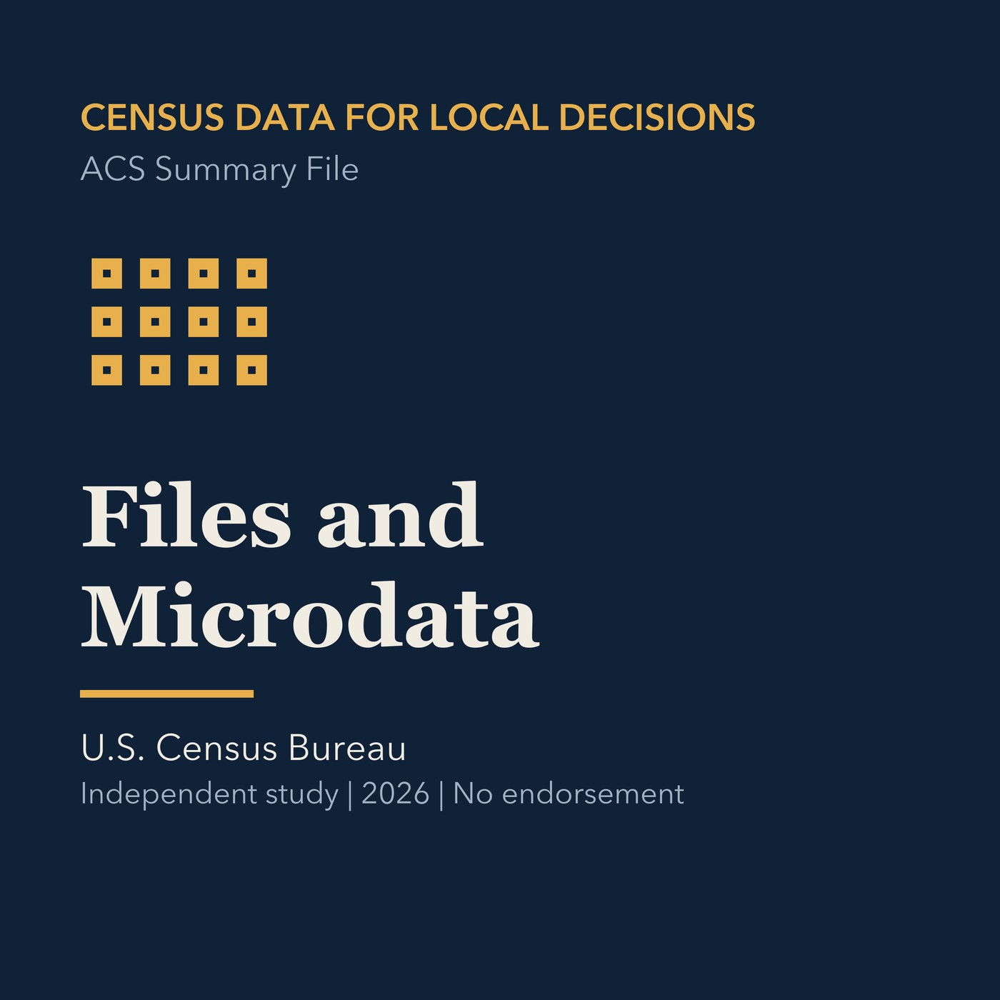

EPISODE 12
Download Files and PUMS
Explains summary files and PUMS while protecting confidentiality and valid geography.

- Stable GUID
cb5f15b5-d89a-5486-b89c-30df0976f969- Release
- census-academy-v2026.2
- SHA-256
1324026fd6635c158db1a1d59c79fcee41d5a546e3c79f996d54b241069f2295